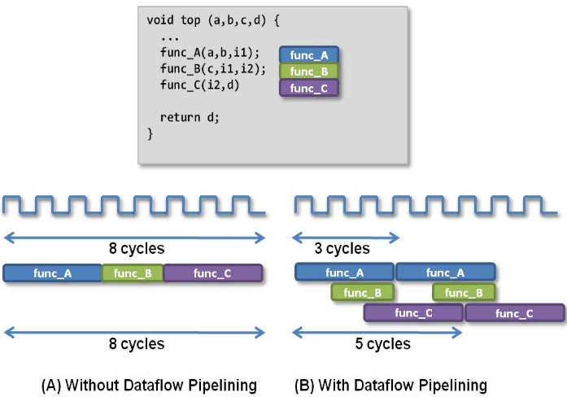

2020.1 Vitis™ Application Acceleration Development Flow TutorialsSee 2019.2 Vitis Application Acceleration Development Flow Tutorials |
5. Optimizing with Dataflow¶
In the last lab, you improved the efficiency of the kernel by using fixed point data types. In this lab, you will look at the structure of your code to increase task and instruction level parallelism. Pipelining is a common technique used by most processors to parallelize at the instruction level. Pipelining allows the processor to simultaneously process multiple instructions at the same time by executing them on hardware that has finished the previous instruction.
The Vitis™ compiler automatically pipelines most operations. You do not need to add anything to enable pipelining in your code. You can look at how each of the loops have been pipelined in the HLS report.
While pipelining usually works at the instruction level, the Vitis compiler can also pipeline at the function level using a transformation called “dataflow”. Dataflow allows you to pipeline multiple functions so that you can execute their instructions simultaneously on different sets of iterations. The following figure shows an example.

Without using dataflow, func_A, func_B, and func_C are executed sequentially. With dataflow enabled, the three functions can overlap, which will reduce the total execution time.
TIP: This lab relates to Step 1: Partition the Code into a Load-Compute-Store Pattern in the Methodology for Accelerating Applications with the Vitis Unified Software Platform in the Application Acceleration Development flow of the Vitis Unified Software Platform Documentation (UG1416).
In this lab, to implement the functions in dataflow, you first divide the original convolution function into three separate functions:
read_dataflow: Read the data.compute_dataflow: Compute the convolution for a particular line.write_dataflow: Write the output to the main memory.
The three functions will use streams to pass data between them. To understand streams, refer HLS Stream Library in the Vitis HLS flow in the Application Acceleration Development flow of the Vitis Unified Software Platform Documentation (UG1416). Streams allow you to process data at the data element level. Using streams, the next module can immediately start processing the element as soon as it is inserted into the stream variable.
Kernel Code Modifications¶
TIP: The completed kernel source file is provided under the
reference-files/dataflowfolder. You can use it as a reference if needed.
Open the
convolve_fpga.cppfile fromsrc/dataflow.First, navigate to the
convolve_fpgafunction, which is the top-level function in the kernel. Modify the structure of this function to call the three sub-functions as follows.void convolve_fpga(const RGBPixel* inFrame, RGBPixel* outFrame, const float* coefficient, int coefficient_size, int img_width, int img_height) { int half = COEFFICIENT_SIZE / 2; hls::stream<RGBPixel> read_stream("read"); hls::stream<RGBPixel> write_stream("write"); int elements = img_width * img_height; #pragma HLS dataflow read_dataflow(read_stream, inFrame, img_width, elements, half); compute_dataflow(write_stream, read_stream, coefficient, img_width, elements, half); write_dataflow(outFrame, write_stream, elements); }
Notice that the three sub-functions are called, and the data is passed by the stream type objects
read_streamandwrite_stream. Those streams are implemented using FIFOs on the FPGA. The DATAFLOW pragma is used so that the three functions will be executed in parallel. To understand how dataflow pragma works, refer to Vivado Design Suite User Guide High-Level Synthesis (UG902).Next, you create the three sub-functions one by one. First, start with the
read_dataflowfunction.This function is created for reading data from global memory, and it passes the data to the next function using streams. To make sure that you do not read data out-of-bounds, zeros are inserted into the streams to add the padding pixels at the bottom of the image. When the line index is less than the image_height, read a line from the input image, and store it in the read_stream stream.
The completed function should be similar to the following.
void read_dataflow(hls::stream<RGBPixel>& read_stream, const RGBPixel *in, int img_width, int elements, int half) { int pixel = 0; while(elements--) { read_stream << in[pixel++]; } int padding = img_width * half + COEFFICIENT_SIZE; while(padding--) { read_stream << zero; } }
The hls::stream objects are defined in the
hls_stream.hheader. The<<operator is used to insert values into a stream.Now, work on the
compute_dataflowfunction. This is the most complicated function because it will read in the streaming data fromread_flowfunction and compute it. The output data will be written to thewrite_stream.The code snippet for
compute_dataflowis as follows.void compute_dataflow(hls::stream<RGBPixel>& write_stream, hls::stream<RGBPixel>& read_stream, const float* coefficient, int img_width, int elements, int center) { static RGBPixel window_mem[COEFFICIENT_SIZE][MAX_WIDTH]; #pragma HLS data_pack variable=window_mem #pragma HLS array_partition variable=window_mem complete dim=1 static fixed coef[COEFFICIENT_SIZE * COEFFICIENT_SIZE]; #pragma HLS array_partition variable=coef complete for(int i = 0; i < COEFFICIENT_SIZE*COEFFICIENT_SIZE; i++) { coef[i] = coefficient[i]; } int line_idx = 0; while(line_idx < center) { for(int i = 0; i < img_width; i++) { window_mem[line_idx][i] = zero; } line_idx++; } while(line_idx < COEFFICIENT_SIZE - 1) { for(int ii = 0; ii < img_width; ii++) { read_stream >> window_mem[line_idx][ii]; } line_idx++; } for(int ii = 0; ii < COEFFICIENT_SIZE; ii++) { read_stream >> window_mem[line_idx][ii]; } int top_idx = 0; int insert_idx = line_idx; int window_line_idx = top_idx; int j = 0; int insert_column_idx = COEFFICIENT_SIZE; while(elements--) { fixed sum_r = 0, sum_g=0, sum_b=0; for(int m = 0; m < COEFFICIENT_SIZE; ++m) { for(int n = 0; n < COEFFICIENT_SIZE; ++n) { int jj = j + n - center; RGBPixel tmp = (jj >= 0 && jj < img_width) ? window_mem[window_line_idx][jj] : zero; fixed coef_tmp = coef[m * COEFFICIENT_SIZE + n] * (jj >= 0 && jj < img_width); sum_r += tmp.r * coef_tmp; sum_g += tmp.g * coef_tmp; sum_b += tmp.b * coef_tmp; } window_line_idx = ((window_line_idx + 1) == COEFFICIENT_SIZE) ? 0 : window_line_idx + 1; } window_line_idx = top_idx; RGBPixel out = {sum_r.to_int(), sum_g.to_int(), sum_b.to_int(), 0}; write_stream << out; j++; if(j >= img_width) { j = 0; top_idx = ((top_idx + 1) == COEFFICIENT_SIZE) ? 0 : top_idx + 1; window_line_idx = top_idx; } read_stream >> window_mem[insert_idx][insert_column_idx++]; if (insert_column_idx >= img_width) { insert_column_idx = 0; insert_idx = ((insert_idx + 1) == COEFFICIENT_SIZE) ? 0 : insert_idx + 1; } } }A local buffer
window_memis defined to store the necessary lines of data for computing.>>operator is used to extract elements from stream. The first few lines of thewindow_memarray should be zeroed out because these represent the padding of the image. This will only be done on the first iteration.The computation is implemented in the main loop, and the loop is pipelined because the COEFFICIENT_SIZE variable is predefined at the compile time. For more details about optimizing loops, refer to Step 4: Improve Loop Latencies in Methodology for Accelerating Applications with the Vitis Unified Software Platform in the Application Acceleration Development flow of the Vitis Unified Software Platform Documentation (UG1416).
After computation, the
outvalue is pushed to awrite_streamfor the downstream function to process.Now, look at the
write_dataflowfunction.void write_dataflow(RGBPixel* outFrame, hls::stream<RGBPixel>& write_stream, int elements) { int pixel = 0; while(elements--) { write_stream >> outFrame[pixel++]; } }
This function is quite simple. It just outputs the streaming results to the global memory.
Run Hardware Emulation for Dataflow¶
Go to the makefile directory and use the following command to run hardware emulation.
make run TARGET=hw_emu STEP=dataflow SOLUTION=1 NUM_FRAMES=1
You should see the following results.
Processed 0.02 MB in 29.728s (0.00 MBps)
INFO: [Vitis-EM 22] [Wall clock time: 23:03, Emulation time: 0.108257 ms] Data transfer between kernel(s) and global memory(s)
convolve_fpga_1:m_axi_gmem1-DDR[0] RD = 20.000 KB WR = 0.000 KB
convolve_fpga_1:m_axi_gmem2-DDR[0] RD = 0.000 KB WR = 20.000 KB
convolve_fpga_1:m_axi_gmem3-DDR[0] RD = 0.035 KB WR = 0.000 KB
View the Profile Summary Report for Hardware Emulation¶
Use the following command to view the Profile Summary report.
make view_run_summary TARGET=hw_emu STEP=dataflow
The kernel execution time is now reduced to 0.059 ms.
Here is the updated table.
| Step | Image Size | Time (HW-EM)(ms) | Reads(KB) | Writes(KB) | Avg. Read (KB) | Avg. Write (KB) | Bandwidth (MBps) |
|---|---|---|---|---|---|---|---|
| baseline | 512x10 | 3.903 | 344 | 20.0 | 0.004 | 0.004 | 5.2 |
| localbuf | 512x10 | 1.574 (2.48x) | 21 (0.12x) | 20.0 | 0.064 | 0.064 | 13 |
| fixed-point data | 512x10 | 0.46 (3.4x) | 21 | 20.0 | 0.064 | 0.064 | 44 |
| dataflow | 512x10 | 0.059 (7.8x) | 21 | 20.0 | 0.064 | 0.064 | 347 |
Next Step¶
You have performed a couple of optimizations on the hardware kernels to improve the performance. In the next section, you look at different host code optimizations, such as using out-of-order queues and multiple compute units.
Return to Getting Started Pathway — Return to Start of Tutorial
Copyright© 2020 Xilinx